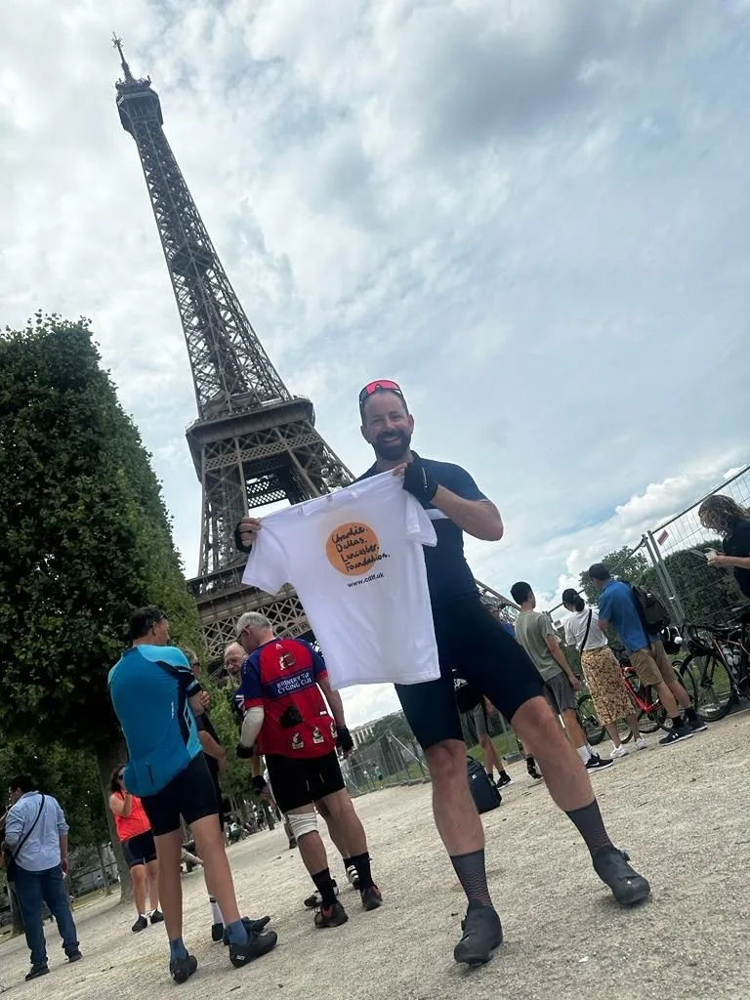
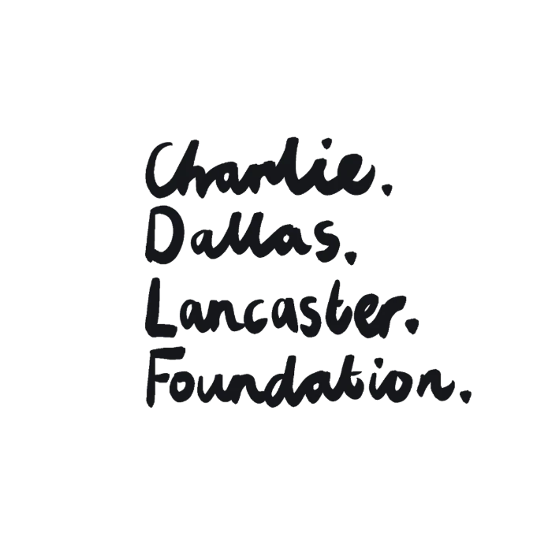
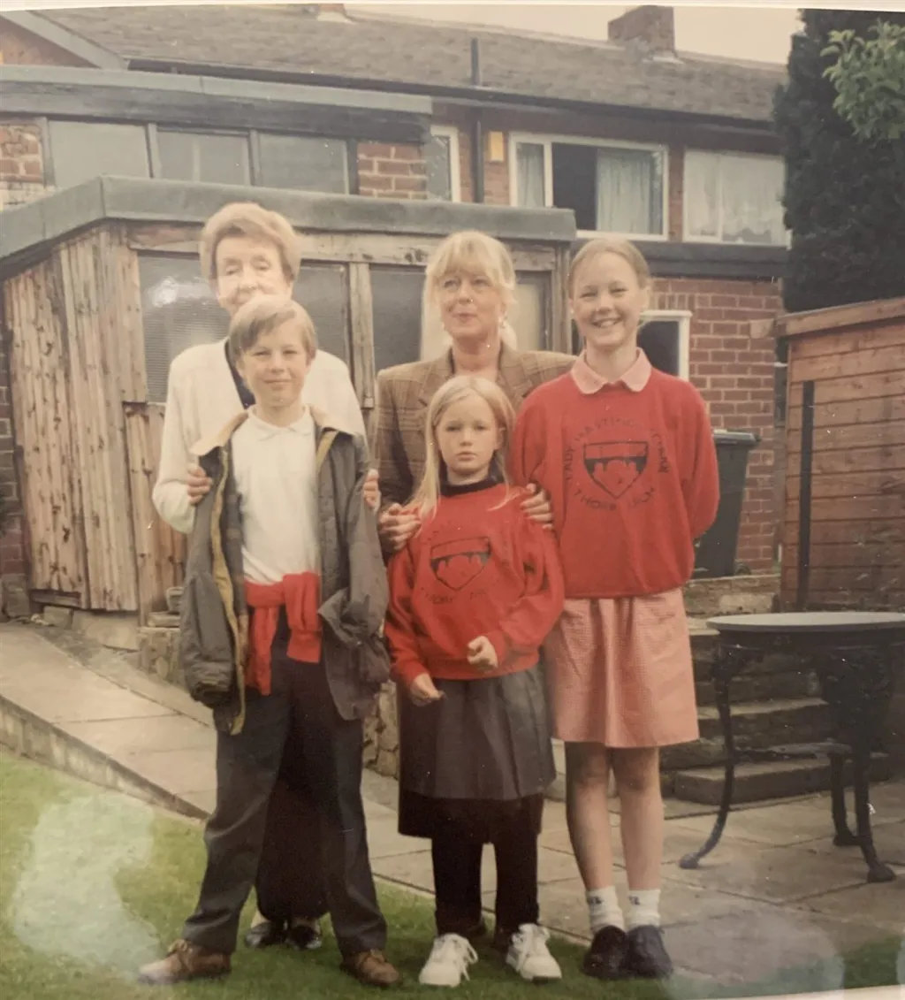
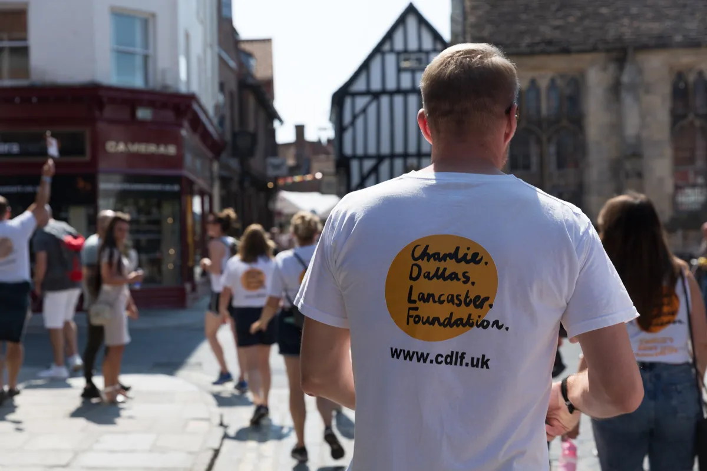
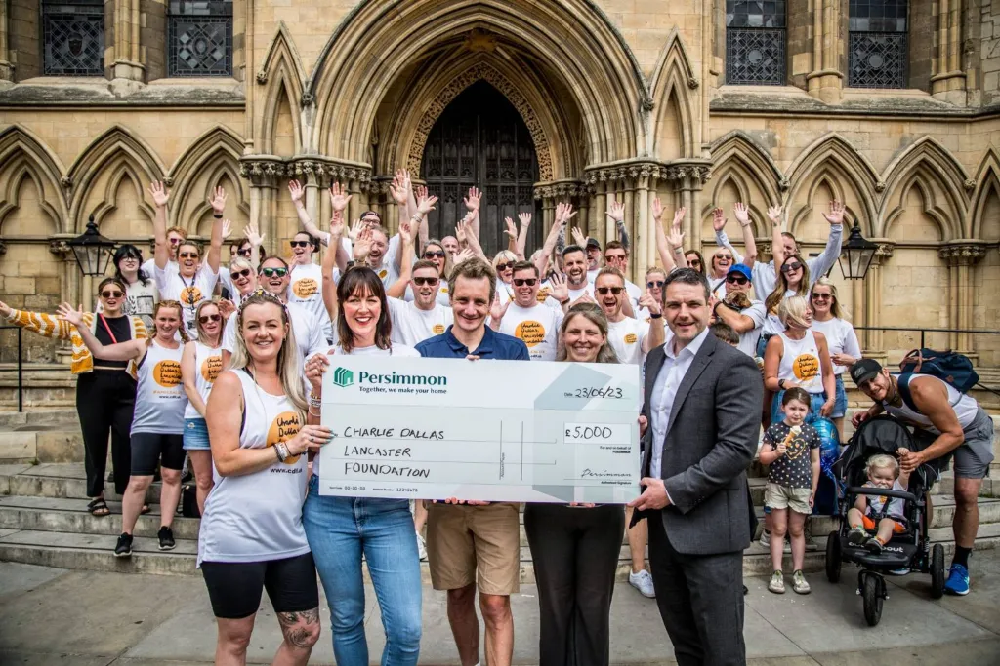
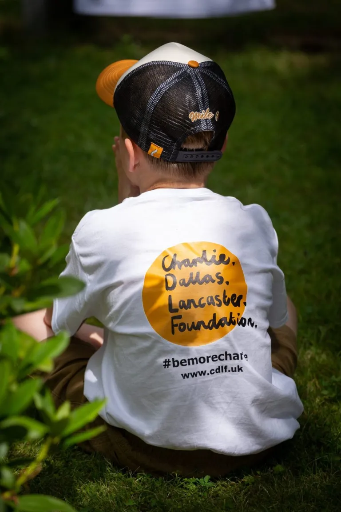
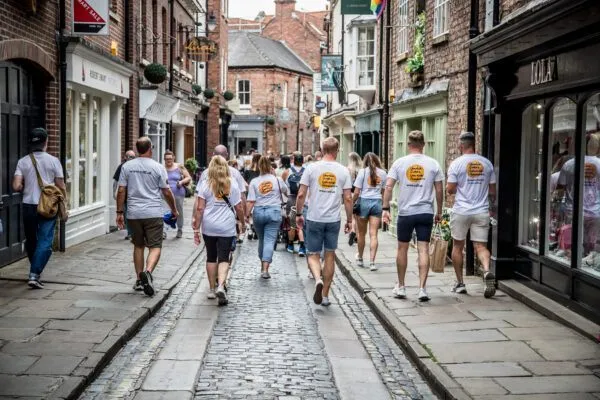
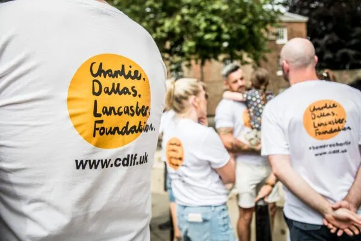
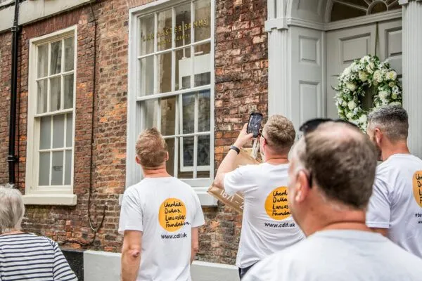
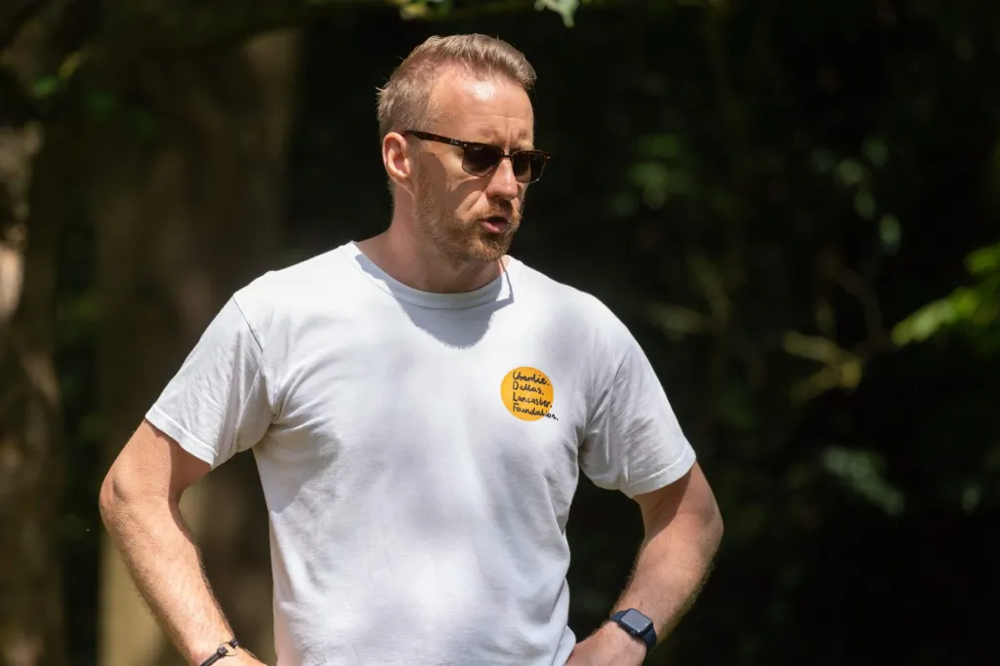

Luke in Paris, 2023Donate
100% of our proceeds go to the wonderful charities we support. Give once or every month, by card or PayPal. No account needed.
“If you can simply make someone smile to bring a moment's happiness it could be enough to change their day.”


Created in the memory of Charlie Dallas Lancaster, a kind, caring devoted family man with a desire to help others, our foundation exists to support a variety of charities across York, North Yorkshire and beyond.

We are a Charitable Foundation, fundraising to allow the provision of much needed help and support to organisations and individuals working within the Mental Health and Suicide Prevention sphere.
Charities which support mental health were close to Charlie's heart. He was an advocate for raising awareness and encouraging others to speak out about their own struggles.
Read more about Charlie's charity work
Luke in Paris, 2023100% of our proceeds go to the wonderful charities we support. Give once or every month, by card or PayPal. No account needed.
Fundraise in your own way, or join Charlie's army on the walk.
If you or someone you know is in crisis, you can talk to someone today. It's free and confidential.
We always want to be transparent about exactly what happens to the money we raise.
See every grant we've madeTotal £37,688. Figures rounded to the nearest pound.
23 May to 23 June, every year. Charlie's birthday is 23 June.
Our largest event. Together, we cover a mile for each life lost to suicide the year prior. A number that is so difficult to try and understand.

A Mile a Life, 2022.
It brings a feeling of togetherness, something Charlie always created when he was around people. Anyone can get involved.
All miles are linked to our club on Strava. We encourage you to get outdoors and enjoy the little things: join the community, join a friend or walk alone and enjoy the fresh air.






The money you raise goes to these six organisations, in York and across the UK.
Subscribe to our mailing list for news about A Mile a Life, our events and where the money goes.